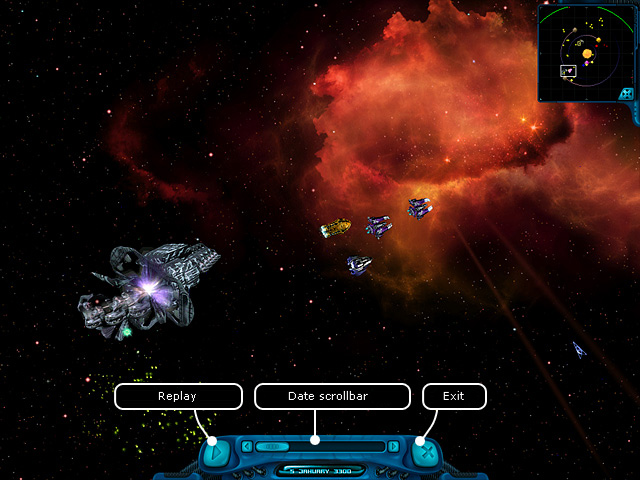

Ranger manual
> Flight log history
|
Ranger manual
> Flight log history
|
| Flight log history If you click the 'Flight log history' button, you'll open the mode of flight history reviewing. All events, which happened to the player during the flight, get registered. If you missed a chance to carefully examine some event during the flight, you can open the flight log and examine it. This mode is a demonstration of the fact that the game world is a truly vivid thing, and the PC characters carry on acting, even if the player doesn't watch them! The flight of each ship is precisely calculated, and you can review all its actions. When you review the history, you can randomly move the camera and watch all events happening in the background. |

| The registration of the events happens only when the player's ship is in the open space. During the flight in the hyper-space or on the planet the events are not registered in the flight log. To start reviewing the flight log: • Press 'Play'. To move the camera to the random spot in the space: • Click in the radar window next to the point of your interest or scroll the screen down with the help of the mouse. To set the date of the reviewing start: • Rewind the scroll bar of dates to the required one. Note. The player can set the amount of days saved in the flight log in the Game settings. To return from the flight log reviewing into the space mode: • Press 'Exit'. |